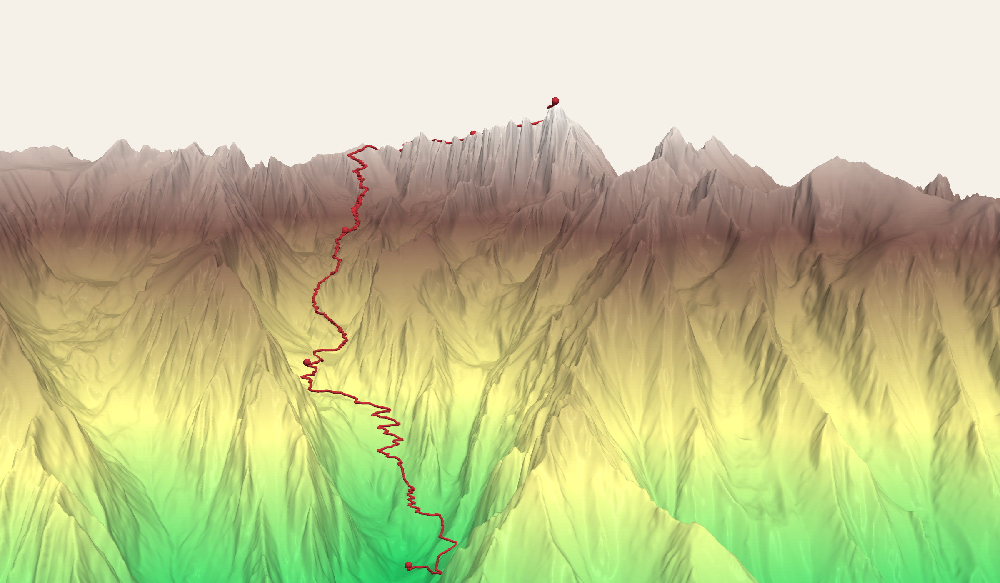
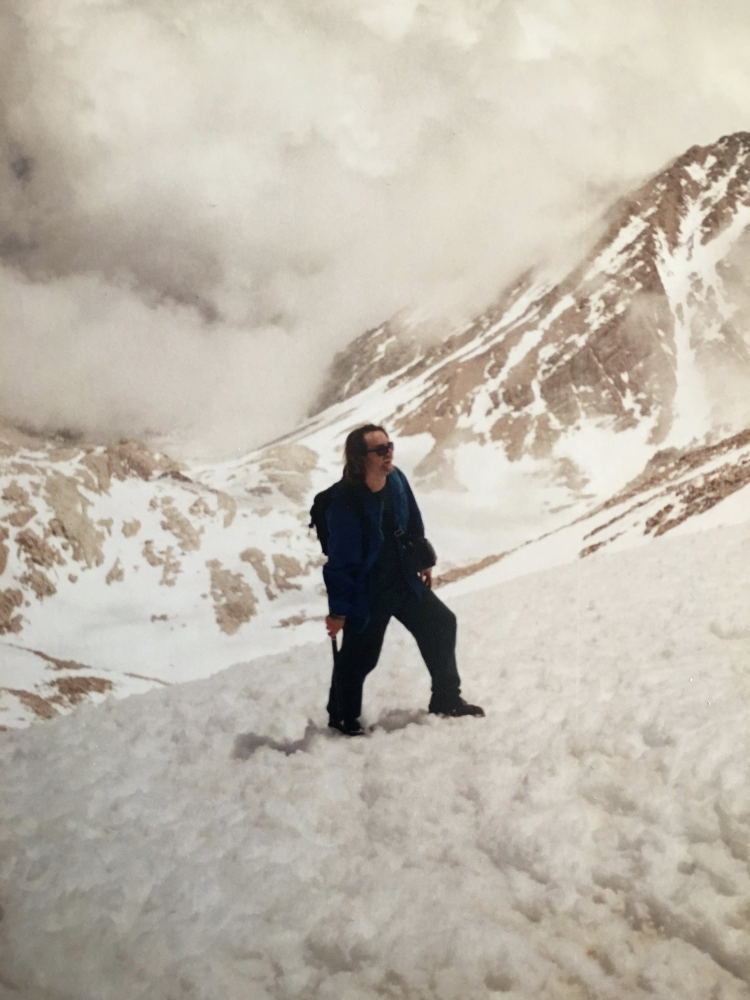
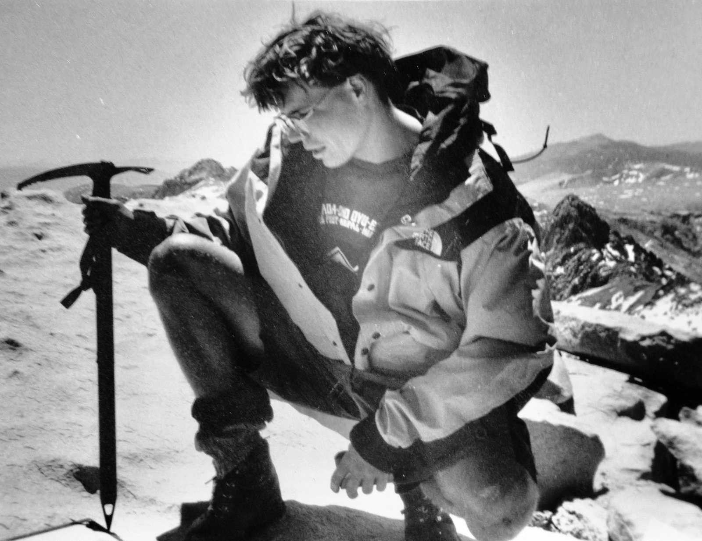
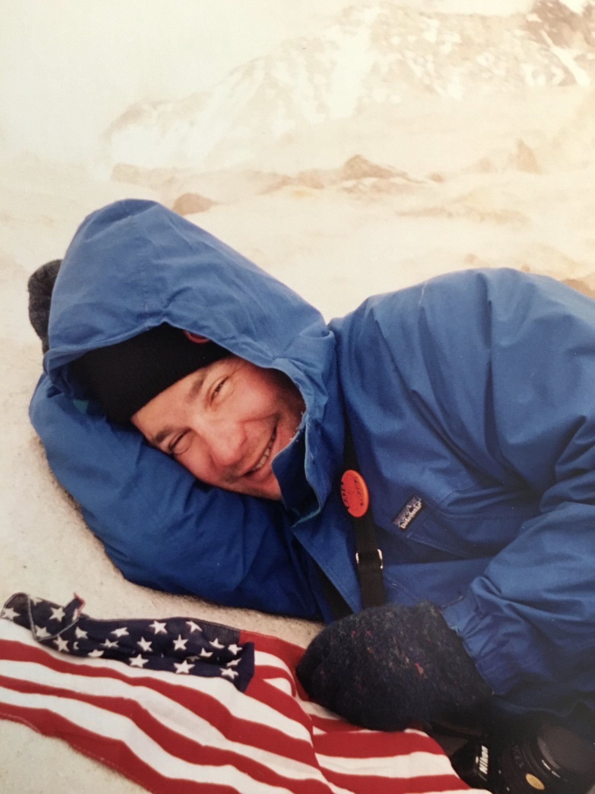
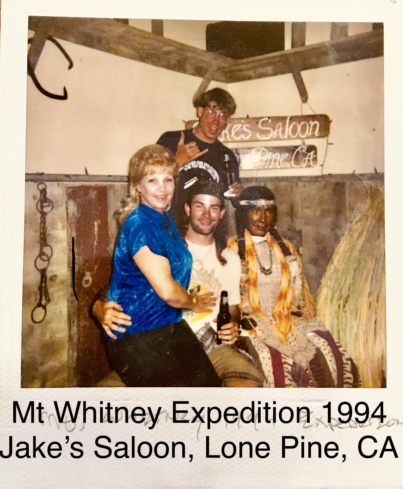

A notebook found in the garage in 2026, wedged between an original Nintendo and a stack of old coffee makers: MT. WHITNEY: AN EXPEDITIONAL CONCEPTUS 1994. Two twenty-four-year-olds with no car, no money and no permit ride a Greyhound two hundred and ninety miles, carry seventy-five-pound packs up the highest peak in the lower forty-eight, and run an FM radio survey from the summit. His words, his order, his obsessions — annotated thirty-two years later.
The Garage
I was cleaning out the garage, looking for something else entirely.
That’s how this starts. Not on a mountain — in a garage in Lakewood, Washington, thirty-two years later, going through boxes of old papers because I’d been writing down some stories about Blinn College and I knew the notes were out there somewhere.
I never found the Blinn papers that day. I found this instead.
The notebook was wedged between an original Nintendo NES and a stack of old coffee makers. I want to be precise about that, because it’s the kind of detail that would sound invented if I made it up. A video game console I hadn’t plugged in since the first Bush administration, some coffee makers we had apparently been unable to part with, and in the gap between them, a notebook I had not thought about in decades.
On the first page, in block capitals, pressed hard enough into the paper to emboss the sheet behind it:
MT. WHITNEY: AN EXPEDITIONAL CONCEPTUS 1994
I stood in the garage and read the whole thing standing up.
It was a time capsule, and I mean that literally — the box is full of them, and I’ve only started. The handwriting is terrible. The emotion is right there on the page, unprotected, in a way I don’t think I could manage now if I tried. And then, two-thirds of the way through, in the middle of my own block capitals, there are two pages of somebody else’s looping cursive that I had completely forgotten existed.
That part stopped me.
Here is what I want to say about it before we go any further. The kid who wrote this notebook is funny, and he has no idea he’s funny. He measures everything. He writes down bus times, phone numbers, elevations to three decimal places, the price of a ticket, the temperature in Lone Pine. He swears constantly. He describes Reno as a prison. He packs an espresso maker into a seventy-five-pound backpack and then, on the final page, announces that the theme of his next expedition will be “light and fast.”
He is twenty-four years old. He has been out of college for about a month. He is me, and he is also a complete stranger, and reading him was more fun than I expected — mostly because he is so obviously having the time of his life and so completely unaware that this is what that looks like.
The temptation, reading something like this, is to fix it. To smooth out the spelling, cut the profanity, make the young man sound like someone who had already learned the things I’ve since learned. I’m not going to do that. What follows is his notebook, cleaned up only enough to be readable — his words, his order, his obsessions. When I have something to add, I’ll add it in my own voice, which you’ll be able to tell apart easily enough, because his is the one having a better time.
It’s too good to leave in a box between a Nintendo and some coffee makers.
So here it is.
No guarantees
We will attempt to climb to the summit of Mt. Whitney. I shall be accompanied by my childhood friend and long-time mountaineering partner, Zack Hurley. This will be our most complex trip to date. We will be challenged to the extremes physically, mentally, and — most important, so it seems at this time — logistically.
We have no stable or reliable transportation other than a Greydog, and we must travel from my home in Reno almost three hundred miles to Lone Pine, which lies at the base of the mountain. So one can see that for two twentysomething lads without a car this is a substantial journey in itself.
Then there is the harsh reality we must face, and that is that we may not even be able to climb the mountain once we get there. We have not been able to secure a permit, and have been forced onto stand-by, whereby we must be first in line at 0700 at the ranger station in the hopes that some European types are delayed and can’t pick up permits they probably reserved months ago — much like we should have done.
Thus one can see that this expedition holds no guarantees, except the fact that we won’t be in Reno and I sure as hell won’t be at work, because it’s my vacation. So read on and the events of the future will unfold within these pages.
However, we are not totally clueless, and we more or less have a basic plan and we are prepared for any general situation that we may encounter. So in summary we want to climb Mt. Whitney and dance around on top, but if we have government problems we will modify our schedule and dance around somewhere else.
Dance around on top. That’s the mission statement. Two men, seventy-five pounds each, three hundred miles of Greyhound, ninety-seven switchbacks — in order to dance around on top. And a contingency plan that consists of dancing around somewhere else.
“Government problems” means the permit.
A few things that need explaining, because he doesn’t bother. A “Greydog” is a Greyhound bus. Zack Hurley is my best friend, and by 1994 we had already known each other most of our lives — we grew up together in Groveland, California, a small town in the Sierra foothills with Yosemite essentially in the backyard. By that summer he was studying photography in San Francisco and I had just finished a biology degree at UNR and was working at Harrah’s, waiting for graduate school to start in the fall.
Neither of us had a car. Neither of us had money. Both of us had a week.
And notice what he does with the permit problem. He doesn’t consider not going. He identifies that the plan has a hole in it, describes the hole accurately, and then makes the plan anyway. The whole trip runs on that principle, and I want to be careful not to call it stupidity, because it wasn’t. It was a specific kind of confidence that I no longer have and can’t quite reconstruct. We assumed the universe would work something out.
It usually did.
And then, having declared that the expedition holds no guarantees, he turns the page and writes out a schedule.
The Itinerarium
Our ideal ITINERARIUM (itinerary) would consist of the following:
Day #1 (Monday June 20th) — Travel day from Reno to Lone Pine. Check in at ranger station and see what the situation for the summit looks like. Camp in Lone Pine and wait like hungry dogs for a “stand-by” permit.
Day #2 (Tuesday June 21st) — Attempt to get a permit at 0700hr sharp. If we get one then hitchhike to Whitney Portal and start climbing to the top. If we don’t get a permit, then we will go to PLAN B, which can not be known at this time. If the trip goes to PLAN A we will hike the 8.7 miles to Phase I base camp at the Trail Crest (elevation 12,500) and camp for the night. Otherwise ???
Day #3 (Wednesday June 22nd) — Summit Mt. Whitney (elevation 14,494). Day hike around the area and basically relax and enjoy the gig. Otherwise PLAN B ???? Move camp lower to: Trail Camp (possibly)
Day #4 (Thursday June 23rd) — Return to Lone Pine. Drink a beer, and think about how we are going to get back to Reno, and how Zack can get back to San Francisco (that’s an expedition unto itself)
Day #5 — Ideally we will return to Reno, Nevada! Ideally this trip will have gone according to this schedule. Stay with the journal and see what happened.
He wrote ITINERARIUM in capitals and then, immediately, put the English word in parentheses after it — as though he’d reached for something grander, enjoyed it, and then thought better of leaving his reader stranded.
“Wait like hungry dogs for a stand-by permit.”
“PLAN B, which can not be known at this time.” A contingency that is formally acknowledged, given a name, capitalized, and left entirely empty. He is twenty-four years old and he has invented the placeholder.
And then the last line. Stay with the journal and see what happened.
He’s talking to someone. Not to himself — to whoever is reading. On the seventeenth of June, three days before the bus, he addresses a future reader directly and tells them to keep going. I don’t think he had anyone specific in mind. I don’t think he expected it to be me, thirty-two years later, standing in a garage in Washington State holding the notebook he wrote it in.
But he left the instruction anyway. So I stayed with the journal.
Here’s what happened.
| The plan, 17 June | What occurred | |
|---|---|---|
| Day 1 · Mon 20 | Reno → Lone Pine. Check the permit situation. Camp in Lone Pine. | Reno → Lone Pine. Got the permits the same afternoon — six openings left, took two. Hitchhiked to the Portal and camped there. |
| Day 2 · Tue 21 | Permit at 0700 sharp, hitchhike, climb 8.7 mi to Trail Crest (12,500 ft) | Climbed from the Portal to Trail Camp (12,000 ft). Ten and a half hours, hungover. |
| Day 3 · Wed 22 | Summit Mt. Whitney | Summited Mt. Whitney. |
| Day 4 · Thu 23 | Return to Lone Pine. Drink a beer. | Returned to Lone Pine. Drank considerably more than a beer. |
| Day 5 | Return to Reno | Returned to Reno, 0505. |
He was a day ahead on the permit and five hundred feet short on the base camp. Everything else landed on the day he said it would, four days before the bus left, written by someone with no reservation, no vehicle, no permit, and no Plan B.
I’ve spent thirty years doing logistics professionally and I’m not sure I’d have called it any closer.
Go simple, go easy, go Greyhound
After lots of doubt and confusion about our transportation, I have made a breakthrough. That’s right — we are taking the bus, and I even have the tickets. It’s good to have them because it lets us know what kind of time window to expect, and so we can plan better.
Reno 730A — Lone Pine 243p — June 20
Lone Pine 1040p — Reno 505A — June 23
Total cost $64 each ticket round trip.
I feel bad for Zack, because I kind of told him we’d only have to bus it one way, but our ride fell through: the guy who would have driven us had to go to a party on the corporate yacht at Lake Tahoe. So if I can just get fifty dollars from Zack I’ll feel better, and I hope he finds the deal fair.
It’s really funny how some people, including myself, behave when it comes to money. I mean, it means nothing and yet represents most everything in our civilization at the same time. I hope I can get away from such thoughts for at least a week.
That last paragraph arrives out of nowhere. He’s been writing about bus schedules for half a page, and then at twenty past nine at night he suddenly has a thought about the nature of currency, writes it down in the same block capitals he used for the departure times, and goes straight back to logistics.
That’s the notebook in miniature. Everything gets recorded at the same weight. A phone number, a fifty-dollar debt, a small crisis about the meaning of money.
He was also right to feel bad about the fifty dollars, and I’d forgotten entirely that I’d promised Zack a one-way ride and then couldn’t deliver. The guy who was going to drive us bailed for a party on a boat. Thirty-two years later I have no memory of who he was, and the boat has outlived him in the record.
Greyhound ran the east side of the Sierra on US 395 as regular service in 1994 — the reason a trip like this was possible at all for two people without a vehicle. That service has since been cut back drastically.
$64 round trip in 1994 is roughly $135 today.
Zack called back. Transport is cool. However, he seems to be worried about water. I guess we all have different worries about this trip.
There is the entire friendship in two sentences. I was worried about how we would physically get to the mountain. Zack was worried about whether we would have anything to drink once we were on it.
Both of us were right. Neither of us was worried about the correct thing, which turned out to be rum.
The shit I am going to bring
Now that transportation is taken care of, I must get my gear together. Currently all my stuff is scattered around my room — most of it is in the closet. What I want to do is use my past mountaineering experience to learn what I really need and what I don’t.
He then writes out a list of thirty-eight items, in two columns, under the heading MT. WHITNEY EXPEDITION INVENTORY. I’m not going to reproduce the whole thing, but I want to walk through a few entries, because the list is doing something the rest of the notebook isn’t.
Mt. Whitney Expedition Inventory · 18 June 1994
- Navigation
- Mt. Whitney 15′ quadrangle
- Inyo National Forest sheet
- Guidebooks ×2
- Compass
- Worn
- Boots · socks
- Long underwear (1)
- Sweat pants (1) · shorts (1)
- Parka · sweater (1)
- Gloves w/ liners
- T-shirt (2)
- Tevas · gaiters
- Carried
- Backpack & daypack
- Ice axe / shovel
- Tent · bivy sack
- Sleeping bag · pad
- Stove & fuel
- Water bottles, 3 ℓ
- Kitchen
- Camp cup · spoon
- Espresso maker
- Tin foil
- Larder
- Ramen · gorp · fruit
- Coffee, instant & fresh
- Power bars
- Cheese & crackers
- Assorted canned meats
- Potatoes · corn · carrots
- Garlic
- Morale
- Walkman w/ speakers
- Choice tapes
- Bota bags of rum, 1.5 ℓ
- Hacky sack
- Camera · binoculars
- Sunglasses, emergency
Maps: the Mt. Whitney 15-minute quadrangle and the Inyo National Forest sheet. Two guidebooks. A compass. This is a man who intends to know where he is at all times, and who will accomplish that with paper.
Boots. Socks. Long underwear (1). Sweat pants (1). Shorts (1). Parka. Sweater (1). Gloves with liners. T-shirt (2). The quantities in parentheses are the tell. He is counting his clothing.
Then, further down: Walkman with external speakers — (choice tapes). A hacky sack. Sunglasses, listed as “for emergency.” An espresso maker. And two bota bags containing a litre and a half of rum.
A Sony Sports Walkman — the yellow splash-resistant model — with FM, auto-reverse, and a pair of external speakers the size of matchboxes.
There was no private listening and no shuffle. You chose four or five cassettes before you left the house, carried them physically, and played them until the batteries died.
The pack, as assembled, weighed somewhere around seventy-five pounds. The pack itself was rented — a blue Snow Leopard internal-frame that I didn’t own and couldn’t afford to own. Zack was carrying an Inca Trails pack with roughly thirty pounds of camera equipment in it: bodies, lenses, film. No previews, no LCD, no way to know whether you’d got the shot until weeks later. Every frame cost money, and he carried all of it up the mountain anyway, because that’s what getting the picture required.
I’ve watched people online agonize over whether to bring a second pair of socks on a three-day trip. We brought canned corn. Actual cans. Potatoes and carrots and a head of garlic, carried up to twelve thousand feet and carried back down again.
And an espresso maker. Which — I’m looking at the list again — I cannot confirm we ever used.
Blamo
So there I am preparing to go on this mountaineering trip and — “Blamo” — I get a blowout on my mountain bike coming home from my friend Neil’s, where I’d gone to borrow a camp shovel for Zack. Good thing I wasn’t drunk, or things could have been worse.
I think I need to watch my step until I get there. I can’t go lame before I’m out of the starting gate; that would suck big. So I cleaned up my road rash and hoped I didn’t strain anything too badly, or I could have problems on this trip. I hope these aren’t famous last words.
They weren’t. The road rash is never mentioned again.
I like this entry because of what he’s afraid of, which is being disqualified before the start. Not the mountain. The forty-eight hours between here and the mountain. He has one week of vacation and a non-refundable bus ticket and he has just been reminded that the plan can be destroyed by something as ordinary as a bicycle tire.
Also: “Good thing I wasn’t drunk.” Hold onto that. He is going to be extremely drunk in about thirty hours, at eight thousand feet, on the night before a ten-and-a-half-hour climb.
Lone Pine
each
remaining
pack

The city really is like a prison
Zack arrived at 1930 last night, having had motorcycle problems — spewing oil and leaking gas. Then we packed our stuff, and God almighty it weighs a lot, but it’s got everything we need. Or everything we think we need.
Next thing you know we’re on that bus headed south, so there ain’t no turning back. This should prove to be a very long journey, as the bus is doing about forty. But it’s the fastest way for us to go, and it’s good to be outside of the Reno city limits. The city really is like a prison. There are no fences or walls; instead there’s the harsh desert, which tends to keep people here.
I want to leave that alone. He wrote it out a bus window somewhere south of town, in ballpoint, in capitals, and it is a better sentence than anything I have written since.
We’re in Mammoth now and I must say it is rather tripped out, because it’s like a city with city things and way too many yuppies. The bus trip has otherwise been smooth and without event, except for the outpatient up front who is way too talkative. Good thing Zack and I pegged him from Reno; we’re still making every attempt to stay away from him.
The mountains around here are right-on, and I feel that I’m connecting with them even as I write this. Their sublime essence is permeating into my soul, so to speak.
“So to speak” is him getting embarrassed halfway through his own sentence and trying to walk it back. He is twenty-something, he has just told his notebook that a mountain range is permeating his soul, and then he flinches.
He also draws a picture. At the bottom of that page there’s a pencil sketch of a jagged ridgeline, shaded in with quick diagonal strokes, captioned in his own hand: Futile attempt at Laurel Mtn (elevation 11,812).
He got the elevation right. He always got the elevation right.
About the tapes, since he mentions “choice tapes” and never says which. I know what they were. An older Fugazi tape. The new Beastie Boys — Ill Communication, the one with “Sabotage” on it, which had been in stores for roughly three weeks when we got on that bus. Green Day’s Dookie, which was four months old and inescapable that year. And a stack of Zack’s mixtapes, which had everything on them.
Green Day and the Beastie Boys were on more or less constant rotation. The mixtapes were where it got interesting — Zack’s tapes always had something deeper buried in them. Camper Van Beethoven. The Replacements. Some edgy metal that I could not now identify under oath.
That’s what a soundtrack was in 1994. Not a library. Four or five cassettes, chosen in advance, carried physically, and played until the batteries died. You committed. And when you played them, you played them out loud on two plastic speakers the size of matchboxes, because there was no other way to share music with the person sitting next to you.
He was living in San Francisco, and the Bay Area punk scene he was taping from was, in June 1994, in the middle of tearing itself apart. Everything ran through 924 Gilman Street, the all-ages, volunteer-run club in West Berkeley that had produced Operation Ivy, Rancid, Jawbreaker, Samiam, Crimpshrine and Green Day.
Green Day had signed to a major label in 1993 and been effectively excommunicated for it — Dookie came out that February and went supernova anyway. Rancid spent 1994 turning down majors and staying on Epitaph. And six weeks before we got on the bus, on 7 May 1994, Jello Biafra was attacked by people at Gilman calling him a sellout.
None of which either of us knew, or would have cared about at twelve thousand feet. But that’s what was on the tape: a scene at the exact moment it stopped being a secret.
Just passed Independence and Mt. Williamson, second highest in the lower forty-eight. We can see the top of Mt. Whitney and we’re only ten miles from Lone Pine. Never thought we’d get here. There’s hardly any snow on the mountain and the crowds don’t look too bad. We’ll see.
“Never thought we’d get here.” They are seven hours into a trip they’ve been planning for three days, and he has already been surprised by his own arrival.
Six openings left
Timing is of the essence. We got off the bus and it was hotter than hell and we didn’t even know where we were. Things did not look good. But we went to the ranger station south of town to see about permits, and the ranger lady said they had six openings left. We took two and said thank you very much.
Six openings left. We took two.
In June 1994 the Mt. Whitney trail ran on quotas with same-day walk-up availability for cancellations and no-shows. A weekday arrival with no reservation had a real chance.
Today the trail runs on an advance lottery. Applications open months ahead and most are unsuccessful. This trip, exactly as taken, could not be repeated.
I need to sit with that for a second, because it is not possible anymore. Today the Mt. Whitney trail runs on a lottery, and people apply months out and get denied. In June of 1994 two guys with no reservation walked in off a Greyhound in the afternoon and were handed permits for the next morning, and the whole thing hinged on a phone call I’d made two days earlier where a ranger mentioned, offhand, that weekdays were less crowded than weekends.
That’s the trip. It shouldn’t have worked. It kept working.
Next problem: how to get up to the Portal, fifteen miles up the mountain. Hitchhiking seemed logical. While Zack was using the toilet at a gas station I used my PPE skills from Harrah’s and asked some people for a ride. They said sure — but “where’s your friend?” So I ran around looking for him, found him, and off we went. They were teachers at Buena Vista High School in Ventura, going on a big long hike themselves. They drove us up to the trail head. We wished each other well and went our separate ways.
PPE stands for People Pledged to Excellence. It was Harrah’s internal customer-relations training, and I had been through it as a casino employee in Reno, and what he is describing here — with total sincerity, as a transferable skill — is the deployment of corporate guest-service technique on strangers at a gas station in order to move two men and about a hundred and fifty pounds of gear fifteen miles uphill.
It worked on the first try. I have never been prouder of anything.
We found a good campsite, set up quickly, and next thing you know we’re drinking beer and listening to Fugazi. Fifteen hours ahead of schedule. Right fucking on, dude.
Tomorrow we’ll get up at six and be on that trail by seven, no later.
A second hand
The next two pages are not in my handwriting.
They’re in looping cursive, sloping downhill across the ruled lines, and they are the only pages in the notebook that aren’t in block capitals. I had completely forgotten they existed. When I found them in the garage I actually said something out loud.
In Zack’s hand · Whitney Portal, night of 20 June
I really don’t know the date and Brooks and I are both hammered off our asses. Sometimes it is good to be drunk. Mostly I am always drunk. My handwriting is bad, to be honest.
Brooks is my best friend. I would do anything for him. And here we are at the base of Mt. Whitney. Hopefully we will make it to the top, but what the hell do I know — I’m only the photographer. At least we will come out of this with a decent portfolio. Even though I’m drunk.
Brooks is the only person who’s ever had faith in us. We are a team. We have always been a team and always will. We are drunk, lost, and having fun. Not many people can say that, so fuck ’em. (By the way, I’m drunk.)
Zack wrote that at eight thousand three hundred and sixty feet, at some point after we had drunk most of a litre and a half of rum and a twelve-pack of beer, the night before the hardest day either of us had ever had.
Everything I wrote in that notebook is about logistics. Bus times, elevations, permit rules, dollar amounts. Seven pages of a young man managing a problem. Zack picks up the same pen, in the same tent, and says the thing directly.
“I’m only the photographer.” He is carrying thirty pounds of camera gear up a mountain to document a trip that is not his idea, and he calls himself the photographer like it’s a demotion.
He was the reason there is anything to look at.
High elevations make for high hangovers
So that was the way the night turned out. Zack went on to say “high elevations make for high hangovers,” and that’s for sure. It turns out we wound up drinking most of our rum and a twelve-pack of beer. So we felt like shit when we left the Portal camp for our “little” hike up to Trail Camp.
We did meet a pretty cool dude from Austria, here by himself. He’s with us now at Trail Camp and he’ll climb to the summit with us.
But dude, the hike up here was pure hell. All we could do was put one foot in front of the other, as the trail was about straight fucking up. We left at 0830 and didn’t get to Trail Camp until 1900 — though we took a three-hour break with a nap at Outpost Camp. So basically it sucked, and with the hangover, well.
Six miles. Three thousand six hundred and forty feet of gain. Ten and a half hours elapsed, seven and a half of them moving, with seventy-five pounds each and a hangover acquired at altitude.
Two days later we would come back down past that same point in one hour.
The switchbacks between Trail Camp and Trail Crest gain roughly 1,600 feet in two and a half miles. The count is traditionally given as ninety-seven, though nobody agrees, and the number rises the more times you count it.
The Austrian gets one sentence. His name was Ben, and the notebook never says so.
He was travelling alone through the western United States, looking at it, before starting at MIT. That was the whole plan — come over, see the West, then go be a graduate student in Massachusetts. He’d been around us since the Portal, which means he was there for the rum, and he had his own objectives to tend to, so he’d peel off and go do them and turn up again.
The thing I remember him saying, and which is not in the notebook at all, is that in Austria they don’t build switchbacks. You go straight up.
We told him about the ninety-seven switchbacks between Trail Camp and the crest and he seemed to regard them as an American indulgence.
There’s a small discrepancy here I’ll leave standing rather than fix. The notebook records meeting him on the way up, at Trail Camp, as though he appeared on the trail. My memory has him around earlier than that, back at the Portal. One of those is wrong and I genuinely don’t know which. The notebook was written the same week and I wasn’t, so the odds favour the notebook — but the notebook also failed to write down his name, so it isn’t infallible either.
Both versions go on the page. That’s what the notebook is for.
See you when we get back
We’re at Trail Camp now at six and preparing to hit the summit. Four parties have already started up; we’ll start soon. It looks like we’ll have to traverse some large snowfields, but we should still be able to make out the hundred or so switchbacks to the crest. The view is incredible, and we have enough time to go up.
We are going to start now. See you when we get back.

That’s the last thing he writes on the day it happens.
Seven pages of buildup — the permit, the bus, the hitchhike, the gear, the hangover — and when the mountain finally arrives, the notebook goes quiet. He puts it in the tent and goes climbing.
“See you when we get back,” addressed to a spiral notebook. As though it were staying behind to wait.
Low and behold
Well, we made it back OK. The hike up wasn’t that bad — we made fast time and passed a few parties along the way. The switchbacks were fine and the snow was easy to manage. When we got to the Trail Crest the whole world changed. We could see for miles in every direction. We saw the Great Western Divide and a good portion of Sequoia National Park.
We travelled another two miles to the summit. We saw the Smithsonian hut in the distance and travelled toward it, and low and behold there we were at the top, with an actual elevation of 14,496.811 feet above sea level, the highest peak in the lower forty-eight. And we did it.
“The whole world changed” is the notebook’s entire account of that, and it is the one place I’m going to add something, because he was right and he undersold it.
You come up ninety-seven switchbacks with your head down, and at Trail Crest the mountain simply stops having a west side. Behind you the whole east face drops away to the Owens Valley, five vertical miles of it, the way you came. In front of you the Sierra opens out — the Great Western Divide standing up across the middle distance, the crest running north and south, range behind range behind range. And straight below, on the west side, frozen lakes. Still iced over in late June. Guitar Lake and the Hitchcock Lakes, though I’d be lying if I said we knew the names at the time.
The Pacific Crest Trail runs through that country. We knew roughly nothing about it in 1994 — it was a line on a map and not yet a thing people organized their lives around. We looked down at it and then went to the summit.
That’s the moment, if you want the moment. Not the top. The crest, where you find out the mountain has been hiding half the world from you the entire climb.
The stone shelter on the summit was built in 1909 by the Smithsonian Institution as a high-altitude observation station. It is still there, and it is still the thing you steer toward across the last two miles of the plateau.
Three decimal places.
He is standing on the highest point in the contiguous United States, and he records the elevation to the nearest thousandth of a foot, because that’s what it said on the monument and he was not going to round it.
That number, incidentally, is real. It’s the old NGVD 29 benchmark value, the survey datum in use at the time. The number you’ll see today is 14,505 feet, because the reference sea level was recalculated in 1988 and adopted later. The mountain didn’t grow. The ocean moved.
But he didn’t know any of that. He just read the marker and wrote down exactly what it said.
There’s a photograph of him doing it.


Black and white. He’s crouched down on the summit rock in a shell jacket with the hood pushed back, glasses on, head bent, reading the sign. The ice axe is planted upright in the frame beside him, a foot from his hand. Behind him the peaks run off toward the Great Western Divide with snow still in the gullies.
That’s the moment the number came from. The photograph and the three decimal places are the same instant — him reading, and Zack, standing a few feet away, deciding this was the picture.
Note where the axe is. Upright, planted, within arm’s reach.
It has about two hours left before it’s lying in the snow somewhere above the cirque with both of us already at the bottom.
We hung out on top for about two hours. We took lots of pictures — Zack took about a hundred and sixty — and everyone else was taking pictures too. There was even a marmot that introduced himself for the cameras. There were quite a few people up there, but they were all pretty normal and nice, seeing as we all went through the same hell together.
A hundred and sixty frames. On film. That’s four or five rolls, shot on a summit, with no way to check a single one, carried back down and developed days later.
I brought my Walkman up so I could see what stations we could pick up. Got one from Barstow and lots from Los Angeles, including KKXX 105.3. Their music sucked but at least I could hear their squabble.
He carried a Walkman to fourteen and a half thousand feet and ran an FM propagation survey.
I’ve thought about this one more than anything else in the notebook. He is on the summit. The Great Western Divide is in front of him. And what he wants to know — what he is actually curious about, in that moment, standing on top of everything — is how far the radio reaches from up here.
It reaches Los Angeles.
That’s the biology degree, I think. Or whatever the thing is that the biology degree was a symptom of. He couldn’t stop taking measurements. Flowers, elevations, marmots, radio waves. Every environment was something to sample.
Before we left we signed the book up there, so there is now a Department of the Interior document that proves we were up there.
I love that he needed proof. Two hundred photographs weren’t enough; he wanted it in the federal record.
Let’s slide down the fucking hill
Now the journey down. We jammed pretty fast until we got back to the Trail Crest, then we looked down the nine hundred metres to the bottom of the snow-covered cirque and said to ourselves: let’s slide down the fucking hill.
So we zipped up our jackets, lay on our backs, and — zoom — all mighty, we were going hell of fast and made it down in a minute, easy. It was all fine and great until we realised the ice axe was missing somewhere up on the snow trail, and there were other people coming down. Talk about your sledding handicaps. So we climbed back up the cirque, found the axe, and damn, we had to slide back down again.
Read that again, slowly, and count the problems.
Nine hundred vertical metres of snow. On our backs. In under a minute. And the ice axe — the thing you use to stop, the only piece of equipment that makes a glissade survivable rather than merely fast — was not in either of our hands. It was somewhere up on the slope behind us.
So we climbed the whole thing back up. Found it. And then, because that was the only way down, did it again.
The second run was the one where we had the brake.
And I want to be honest about it, because the accounting above makes it sound like a near-miss and that isn’t how it felt. It was exhilarating. It was the most fun either of us had all week. Nine hundred metres of snow going past underneath you, that grinding rush of ice under your back and the axe biting in beside you — if there had been a way to fly back up to the crest and do it again, we would have run that thing all day. As it was, the only way back up was to climb it, and we climbed it, and then we got to do it a second time. We did not experience that as a punishment.
That’s the part that doesn’t survive into adulthood, I think. Not the risk tolerance — the appetite. The willingness to reclimb nine hundred metres of snow at the end of a summit day purely because the way down was fun.
For the record, since somebody is going to ask: no crampons. No traction devices of any kind. There was one ice axe between the two of us and for the first nine hundred metres of that descent it was lying in the snow somewhere above us.
It could have gone differently. Most of that week could have gone differently — the sketchy scene with the Deadheads in the county park, the cops circling, the rum at eight thousand feet the night before a ten-hour climb. None of it did. That’s not the same as none of it being able to.
I still have that ice axe.
Thirty-two years, several states, and a number of houses later, the thing we abandoned nine hundred metres up a snowfield and then reclimbed an entire cirque to recover is still in my possession. It outlasted the Greyhound route, the permit system, the film, and the notebook’s stay in the garage.
We went back up for it once. It seems to have decided that counted for something.
Back at Trail Camp we ate a lot. Got hell of sunburned, windburned, and generally exposed to the harsh elements. So we packed our bags and headed down to Outpost Camp. We did it in an hour — funny that it took us three hours to get up there.
Along the way I found a few more sky pilots. They only grow above eleven thousand feet, and I wanted to get one for Karri. I do hope she likes it, as they’re really hard to find and I had to lean over a cliff to get them. I’m going to make an art project out of these wildflowers — press and laminate, really. Should be a nice floral arrangement.
Polemonium eximium. A cushion plant of the Sierra crest, essentially absent below eleven thousand feet, flowering deep blue-violet in a place where almost nothing else flowers at all.
We know more now about leaving alpine plants where they are.
Sky pilot is Polemonium eximium. It’s a cushion plant of the Sierra crest and it essentially doesn’t occur below eleven thousand feet, which he knew, and wrote down, correctly, from memory, at the end of a day in which he had climbed a fourteener and sledded off it twice.
In 1994 he leaned over a cliff for them, and the whole reason he did it was to bring something back for someone who wasn’t there.
Karri was a girl at work. We all worked at Harrah’s forever — 1990 to 1996, in my case — and she’d said she wanted some nice wildflowers from the mountain, and so he got her some. That’s the entire transaction. Someone mentioned in passing that they’d like a flower, and he remembered it at eleven thousand feet with a hangover, and leaned out over a drop to collect it.
I have no idea what happened to her.
Nothing but zombie vision
Down at Outpost Camp the trip is starting to have a negative aspect on us. We’re burning out hard. Running out of food, tired, muscles aching, sunburned, windburned, and the elevation isn’t helping at all. Basically the trip is starting to deliver negative utility, for sure.
So we thought we’d go to sleep early, but that would be too easy for us. We couldn’t get to sleep. Even though we were so tired, we were like zombies. So we got up at 0230 and had some tea and discussed how bad the situation was. Then the sun came up at 0530. Then we took an hour’s nap.
And now here we are — out of fuel — and we’re going to pack up and get the hell off this rock pile.
Until then, nothing but zombie vision.
“Negative utility.”
He’s out of food. He’s out of stove fuel. He’s been awake since half past two in the morning, sunburned and windburned at ten thousand feet, and the phrase he reaches for is an economics term. He is describing, precisely and correctly, the moment a trip stops paying for itself.
This is the low point of the notebook and it’s also the point where I recognize him most. Whatever is happening, however bad it gets, the response is to find the accurate word for it and write the word down.
They got up at 2:30 in the morning and made tea and discussed how bad the situation was. Two people at ten thousand feet in the dark, with nothing left to burn after that pot, having a meeting.
One hundred and ten degrees
The hike down went by very fast, as we wanted to get the hell out of there as fast as possible. It only took an hour and a half to reach the Portal. There we hung out at the store and talked to the locals — Andy — about the area, and he told us about other good hikes in the region. We took showers and drank beer while we waited for Ben to get back from another hike; he’s giving us a ride down to Lone Pine at two. So we waited, saw some BMW test vehicles, and talked about what we’d done.
The Owens Valley has been used for hot-weather automotive proving runs for decades — long straight highway, reliable heat, and very few people. Camouflaged prototypes on 395 are a local commonplace.
Two men who have not slept, sunburned to the point of injury, sitting outside a store at eight thousand feet, watching camouflaged German prototype cars go past. It did not occur to him to find this strange. It goes in the notebook the same way the bus fare did.
And this is Ben again — the Austrian, off doing one of his own objectives, coming back at two o’clock to drive us down.
Which is the part I’d missed for thirty-two years, reading my own handwriting. The notebook calls him “the dude from Austria” on one page and “Ben” on another and never connects them, so for a while I thought we’d met two different people. We hadn’t. The solo traveller we picked up on the mountain was the one person in this entire story who had a car.
Two men who had spent four days solving the problem of not having a vehicle — the Greyhound, the fifty dollars, the hitchhike, the PPE skills at the gas station — got their last ride from a kid from Innsbruck who was on his way to graduate school in Cambridge.
Then Ben came, and we waited for it to cool down in Lone Pine. It was hot — a hundred and ten — and we sat outside in a park with some Deadheads headed to the show in Vegas. After we ate with Ben and said goodbye, we got a lot of beer and drank it away. That was fine except there were lots of cops in that town and we were worried about being harassed, seeing as we didn’t look too hot in the eyes of the law.
We had come off a mountain. We had not slept in something like forty hours. We were burned red, filthy, drinking in a public park with Deadheads in transit to Las Vegas, in a small town in Inyo County, in a hundred and ten degree heat.
“We didn’t look too hot in the eyes of the law” is, I think, accurate.
Then we went and ate at the Mt. Whitney Diner and refuelled our seriously depleted bodies. Played some pool, left for the bus stop, had one last beer at Jake’s Saloon where we got our picture taken. Then we flagged down the bus and started the seven-and-a-half-hour ride from hell all the way to Reno. It’s hard to sleep on those buses, but I managed two or three hours. I do believe a car would be a good idea.
I do believe a car would be a good idea.
Four days, three hundred miles each way, a fourteen-thousand-foot mountain, a hitchhike, a glissade, and a hangover at altitude — and the lesson he extracts, in one flat sentence at the end, is that it might be worth getting a car.
He also wrote, in the middle of that paragraph, “where we got our picture taken (see photo album of this journey).”
An instruction. Left in a notebook, for a reader he did not have yet, pointing at a photograph in another box.
I have it. It’s a Polaroid, and it survived.

Thirty-two years later I found the notebook in the garage, and the notebook told me where to look next.
Light and fast
So we made it back to Reno, burned out. But the truth of the matter is that the trip was a success, and I would certainly do it all over again.
And I shall. On the Fourth of July weekend, Neil and myself are going to climb Banner Peak, Mt. Ritter, and maybe White Mountain Peak. “Light and fast” is the theme, and the lessons learned here will no doubt play an important role in future expeditions.
THE END, in inch-high capitals, and then his signature with a flourish underneath it.
He had been home for a matter of hours. He was sunburned, sleep-deprived, and had just spent seven and a half hours on an overnight Greyhound. And the last thing he does before closing the notebook is book the next one — eleven days out, three more peaks, with a stated design philosophy.
“Light and fast.”
This is a man who carried canned corn and an espresso maker and a litre and a half of rum to twelve thousand feet, and who is now, on the same page, in the same pen, proposing minimalism as a way of life.
I don’t know whether the July Fourth trip happened. I hope it did. I suspect that if it did, the pack still weighed sixty pounds.
424 Pierce Street
The trip didn’t actually end at the Reno bus station.
Zack had a darkroom at the house on 424 Pierce Street in San Francisco, and some weeks after we got back, we developed and printed this stuff together. That’s where the photographs from that week became photographs. Until then they were latent — silver on plastic in a bag, physically real and completely invisible, carried down a mountain and across three hundred miles of Owens Valley in a pack.
I don’t think people quite remember this part. There was a gap. You did the thing, and then you waited, and then some time later in a room with the lights off you found out what you actually had. Two hundred frames on a mountain and not one of them existed yet.
The summit picture — the one of me crouched over the marker with the axe planted beside me — we made that print at Pierce Street. It didn’t come out of a camera looking like that. It came out of a tray.
Which reframes the whole photographic side of this for me. Zack didn’t carry thirty pounds of gear up Whitney to document our trip. He carried it up there to get material, and then he went home and did the actual work, and I got to stand in the dark and watch a week of my life come up out of the developer.
He’s still doing it. Different city, different mountains, same discipline.
We went back
We climbed Whitney again a few years later.
I want to put that up front, because it changes what the notebook is. Reading it cold, you’d think you were reading about a stunt — two broke young men with no car and no permit, pulling off something ambitious once, by luck and nerve, and then dining out on it forever.
But we went back. And we went back exactly the same way: no planning, no reservations, no particular sense that any of this needed to be arranged in advance. It worked again. We got a ride down from Zack’s boss at the time. We went up that mountain considerably faster than we had in 1994 and it was no less epic for it. There was a night in Bridgeport at Rhino’s, and we camped at the hot springs — the same hot springs from the other stories, the ones that turn up in the Groveland material and the eastern Sierra material and everywhere else.
It all comes around. That’s the thing about writing these down in one place. You start to notice that it’s the same handful of roads and the same handful of people, and that you’ve been circling the same country your whole life.
Zack went back to San Francisco after that week in 1994, and kept going. He’s in Vancouver, British Columbia now, which has all the mountains a person could reasonably need. He still takes photographs. I assume there’s a portfolio somewhere that ought to be seen — though that’s his call and not mine. He’s the artist.
We’ve had a lot of adventures since. Some of them are going to end up written down like this one. There is, for instance, an evening in Midtown that turned into a serious and I would say rigorous debate about the merits of R5-D4, which is a story for another day and another notebook.
We see each other. Not nearly often enough.
The last mountain we went at together was Crown Mountain, in North Vancouver, up above Grouse. We didn’t get it. Weather, and — of course — time. Time is the one that gets you now. In 1994 the constraint was money and we had all the time in the world; these days it’s precisely the other way around, and nobody warns you about the swap.
Next time we go light and fast on that one.
Here’s what I actually think this notebook is about, and it isn’t Mt. Whitney.
There is a window in a life, and it’s narrow, and you don’t notice it while you’re inside it. It’s the stretch where your oldest friend can still disappear with you for a week on nine days’ notice. Where three hundred miles on a Greyhound is a reasonable answer to a transportation problem, because it’s the answer you can afford. Where hitchhiking is a plan and not a last resort. Where seventy-five pounds sounds ambitious rather than medically inadvisable. Where the largest logistical risk you’re carrying is whether the batteries will hold out until camp.
You think it’s going to be like that indefinitely. It isn’t. Zack was already building a life in San Francisco and I was about to start graduate school, and the window was closing while we were standing on top of the mountain running a radio survey, and neither of us had the faintest idea.
That’s why the notebook matters, and it’s why I’m not going to fix his spelling. Everything in it was written by someone who didn’t know how the story came out. He didn’t know whether he’d get the permit when he wrote about the permit. He didn’t know whether he’d reach the summit when he wrote “see you when we get back.” That’s a thing you can only have once, per trip, per life, and it cannot be recovered by remembering — only by finding the actual paper.
And here’s the part I didn’t expect. On the last page of that notebook, having just carried canned corn and an espresso maker and a litre and a half of rum up a fourteen-thousand-foot mountain, he announces that the theme of every future expedition will be light and fast.
Thirty-two years later, on a different mountain, in a different country, with the same friend — that is still the plan. We still haven’t done it. We’re still going to.
On the seventeenth of June 1994, before any of it had happened, he wrote: stay with the journal and see what happened.
I did. It took me thirty-two years to get around to it, and it was in the garage the whole time — between a Nintendo and some coffee makers, in a box I opened looking for something else entirely.
There’s more in there. I’ve barely started.
The notebook. The Polaroid from Jake’s. A print made at Pierce Street in a room with the lights off. And the ice axe, which we went back up a cirque for and which is still, somehow, mine.
The End
Brooks
The Soundtrack
Mt. Whitney, June 1994
An Expeditional Conceptus
Four or five cassettes, chosen before the bus and played on two matchbox speakers until the batteries went — Fugazi’s Repeater, Ill Communication three weeks old, Dookie inescapable, and a stack of Zack’s mixtapes out of San Francisco. Rebuilt as closely as memory allows.
27 tracks · 1 hr 24 min · full songs play in the Spotify app